МЕТОДИЧКА
ПО РЕКОНСТРУКЦИИ ВОЛОС
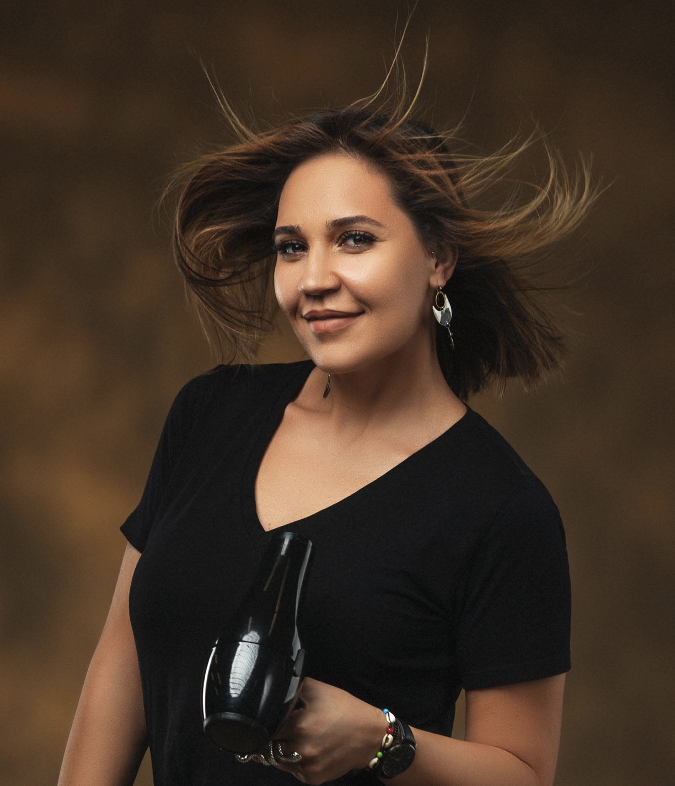
СОДЕРЖАНИЕ
- 1.СТРОЕНИЕ ВОЛОСАстр. 3
- 2.ВОДОРОДНЫЙ ПОКАЗАТЕЛЬ PHстр. 6
- 3.ДИАГНОСТИКА ВОЛОСстр. 7
- 4.ЭЛАСТИЧНОСТЬ ВОЛОСстр. 10
- 5.СТЕПЕНИ ПОВРЕЖДЕНИЯ ВОЛОСстр. 11
- 6.КЕРАТИНОВОЕ ВЫПРЯМЛЕНИЕстр. 12
- 7.БОТОКС ДЛЯ ВОЛОС В КЛАССИЧЕСКОЙ И ТЁПЛОЙ ТЕХНИКЕстр. 13
- 8.НАНОПЛАСТИКАстр. 15
- 9.КОМПЛЕКСНАЯ РЕКОНСТРУКЦИЯ ВОЛОСстр. 16
- 10.ИННОВАЦИОННАЯ РЕКОНСТРУКЦИЯстр. 17
- 11.ХОЛОДНОЕ ВОССТАНОВЛЕНИЕстр. 18
- 12.ХОЛОДНАЯ РЕКОНСТРУКЦИЯстр. 20
- 13.СОВМЕЩЕНИЕ ПРОЦЕДУР С ОКРАШИВАНИЕМстр. 21
- 14.ПОДЛОЖКИ ДЛЯ ВОЛОСстр. 22
- 15.ПРОТЕКТОР ДЛЯ ВОЛОСстр. 24
- 16.ОСНОВЫ ТРИХОЛОГИИстр. 25
- • как появляется перхоть?стр. 31
- • что такое себорея?стр. 32
- • что такое себорейный дерматит?стр. 33
- • лечениестр. 35
- • рост волосстр. 36
- • выпадение волосстр. 37
- • пилинг кожи головыстр. 40
- 17.ДОМАШНИЙ УХОДстр. 45
СТРОЕНИЕ ВОЛОСА
Наш материал, с которым мы работаем, - это волос.
Волос это ороговевшая структура, которая состоит из различных химических веществ, основные из которых являются белком кератина.
Волос на 78% состоит из белка, это самое огромное структурное образование, 15% из воды, 6% из липидов и 1% занимает пигмент. Строительный материал белка — это аминокислоты. Основными физическими элементами, из которых состоит человеческий волос являются: углерод, кислород, водород, азот и сера.
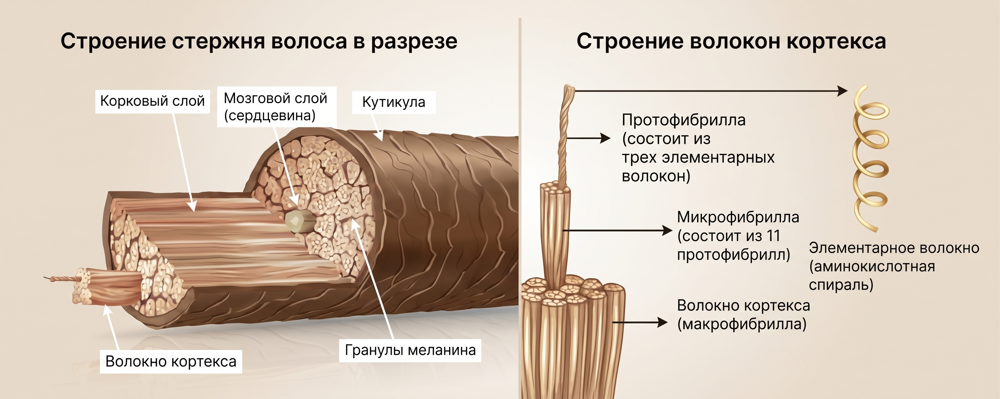
Белки состоят из длинных цепочек аминокислот, которые соединились друг с другом, как цепочки бисера.
Сильная химическая связь, которая соединяет аминокислоты между собой и носит название — белковой или полипептидной.
Белки — это длинные, спиральные сложные аминокислотные цепочки, соединенные белковыми связями. Белковые цепочки кератина переплетаются друг с другом и образуют гибкую спираль. Именно такая сложная структура кератина делает его прочным.
СТРОЕНИЕ ВОЛОСА
Это стержень волоса, который состоит из 2-4 слоев не ороговевших клеток. Медулла отвечает за терморегуляцию, объем и придает волосам силу. Иногда медулла может быть прерывистой.
Находится под кутикулой. Состоит из множества ороговевших клеток вытянутой формы, которые можно сравнить с нитью. Эти переплетенные ниточки образуют микрофибриллы волоса, которые образуют между собой макрофибриллы. Чтобы миллионы микрофибрилл не распадались между собой на молекулярном уровне, существуют поперечные связи: (дисульфидные, водородные и солевые (ионные)).
По строению напоминает чешуйки шишки или черепицу, где каждая следующая часть немного совпадает по площади с предыдущей. Эти частицы располагаются в 6-9 слоев, которые крепятся при помощи определенного состава. Чешуйки растут от корня к концам. Именно этот слой так приятно блестит, когда волосы здоровы. Основная функция состоит в защите внутренней части волоса.
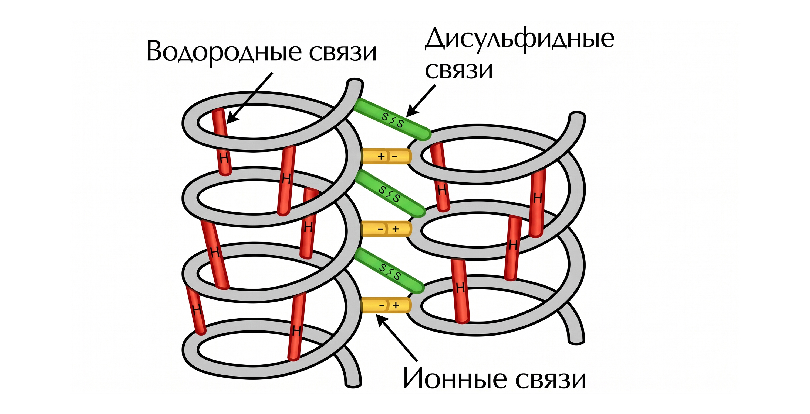
СТРОЕНИЕ ВОЛОСА
Самая слабая связь, разрушается водой и изменением температуры.
Если уложить вручную влажный волос, после его высыхания волос сохранит направление укладки. Так же происходит после использования фена с горячим воздухом.
В волосах таких связей очень много, примерно 1/3 от общей численности связей. При намокании связи разрушаются и волос легко вытягивается (парикмахер работает с мокрыми волосами). При высыхании, волос легко восстанавливается и принимает то положение, в котором оказался. Но со временем, наиболее прочные связи возвращают его в исходное положение.
(*очень упрощенно) связь между молекулами.
В практике — ионная связь — это физическая реакция в химии. Физика такова, все элементы взаимодействуют друг с другом (как противоположные стороны магнита), если бы волосы были одной из одинаковых сторон магнита — мы не смогли бы ничего с ними сделать.
Связи между двумя атомами серы являются самыми прочными связями. При нарушении водородных связей, именно дисульфидные связи возвращают волосы в исходное состояние.
На разрыве и последующем восстановлении этих связей, основан принцип химической завивки и выпрямления волос, другие подобные процедуры.
В составе волос содержится белок кератин. В его молекуле имеется большое количество дисульфидных связей.
ВОДОРОДНЫЙ ПОКАЗАТЕЛЬ PH
PH — это среда, которая указывает на определенную активность создание условий реакции.
Кислая зона — это все что имеет избыток водорода.
Щелочная зона — это все что имеет недостаток водорода.
Благоприятная среда для волос 3,67-5,5 ph.
В щёлочной среде волосы разбухают, и чешуйки кутикулы открываются, в кислотной среде волос сжимается, чешуйки закрываются. При показателе рН больше 14 или меньше 0 — волосы разрушаются.
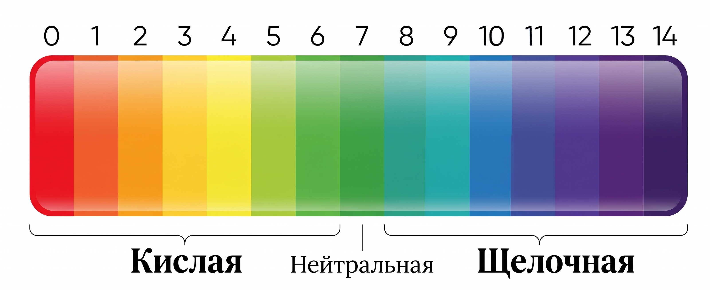
ДИАГНОСТИКА ВОЛОС
Перед процедурой необходимо провести диагностику волос.
Диагностика волоса включает в себя несколько этапов и производится в обязательном порядке перед тем, как определиться с тем, какую процедуру выбрать для клиента и какой состав.
- каким красителем для волос, на каком проценте окислителя и как часто окрашиваются волосы
- была ли кардинальная перемена цвета, например, из белого в темный или наоборот смывка из черного
- делала ли клиентка химические завивки
- делала ли клиентка какие-либо уходовые процедуры для волос у другого мастера ботокс, кератин, нанопластику, прикорневой объем и прочее
- нет ли у клиентки проблем со здоровьем и каких-либо противопоказаний к произведению процедуры
- производим внешний осмотр волоса клиента
- также во время осмотра можно выявить раздражение или повреждение на коже головы, которые являются противопоказанием к проведению процедур
- этническая принадлежность волоса также играет важную роль в выборе состава для работы
- на данном этапе важно, чтобы клиент пришёл с чистой головой, без уходовых средств
- тонкими прядями тянем мокрый волос и проверяем на эластичность
- далее подбираем ШГО (шампунь глубокой очистки)
ДИАГНОСТИКА ВОЛОС
- Сушка волоса производится без расчески, без брашинга, без каких-либо средств, облегчающих расчесывание волос. Именно после сушки вы сможете увидеть волосы клиента такими, какие они есть на самом деле. И уже исходя из того, что мы получили мы будем строить план действий.
- Тест на пористость волос показывает насколько быстро волос впитывает и теряет влагу. Производится сразу после проведения теста на эластичность, когда волосы еще мокрые. Необходимо осмотреть насколько быстро волос по всей длине, у висков или ближе к кончикам теряет влагу. Это покажет нам наиболее сухие и пористые места в полотне, в которых из-за повреждений отсутствует молекулярная влага, и, которым нужно будет уделить особое внимание при нанесении состава.
- Проверка волоса на завиток — силу завитка производится после сушки волос. Именно в этот момент, мы видим натуральный завиток клиента.
Произведя все вышеперечисленные действия — опрос клиента, осмотр волос, механические тесты на поврежденность волоса мы можем сделать вывод о степени поврежденности волоса. Всего выделяют пять степеней поврежденности волос.
ДИАГНОСТИКА ВОЛОС
Тонкие волосы имеют наименьший диаметр, что делает их очень чувствительными к любым воздействиям (тепловым, химическим, механическим). Но при этом они легко меняют форму.
Волосы средней толщины — это наиболее распространенная группа. Она принята за стандарт, с которым сравнивают все остальные типы структуры волос. Стоит отметить, что обычные волосы средней толщины не создают особых проблем при выпрямлении и других химических процедурах.
Толстые волосы имеют наибольший диаметр волосков. Это наиболее прочные и устойчивые волосы, однако эти волосы оказывают значительное сопротивление при любом воздействии, в том числе и химическом. Поэтому обычно время воздействия косметических препаратов на этот тип волос берется больше.
ЭЛАСТИЧНОСТЬ ВОЛОС
Эластичность волос — это способность волос растягиваться и возвращаться к первоначальной длине без повреждений.
Эластичность — это признак внутренней целостности волоса и тех сил, которые скрепляют волокна волоса в единое целое. Влажные волосы с нормальной эластичностью могут растягиваться до 50% от своей нормальной длины и возвращаться к первоначальной длине без повреждения. Сухие же волосы растягиваются приблизительно на 20-30% от своей длины.
На эластичность волоса влияет структура и целостность кортексного слоя, так как именно этот слой несет в волосах основную нагрузку при растяжении. Кутикулярный же слой в данном случае является исключительно защитной оболочкой для кортекса и только лишь помогает сохранять его целостность.
Из всех химических связей, которые существуют в волосах, за их эластичность более всего отвечают водородные связи, поэтому важно поддерживать необходимое количество влаги в волосах. Без нее волос становится очень хрупким.
Волосы с хорошей эластичностью хорошо растягиваются и возвращаются в первоначальную форму, хорошо держат завиток и укладку. Им проще задавать любую форму при укладке и подобные волосы выдерживают агрессивные химические процедуры, такие как осветление, химическая завивка(химическое выпрямление) и окрашивание. Именно поэтому перед подобными процедурами для проверки качества волос делается тест на эластичность.
СТЕПЕНИ ПОВРЕЖДЕНИЯ ВОЛОС
причина: неправильное расчесывание
процедуры: любые
причина: неправильное расчесывание, сушка и пребывание на солнце без защиты
процедуры: любые при t 🔥 210–230°C
причина: укладки без термозащиты, окрашивания
процедуры: питательный кератин, ботокс в любой технике при t 🔥 190–210°C
причина: многократное окрашивание, обесцвечивание, завивка и выпрямление химическими составами
процедуры: ботокс при t 🔥 160–190°C
причина: все вышеперечисленное, жесткие смывки
процедуры: только ❄️ Холодное восстановление без термообработки
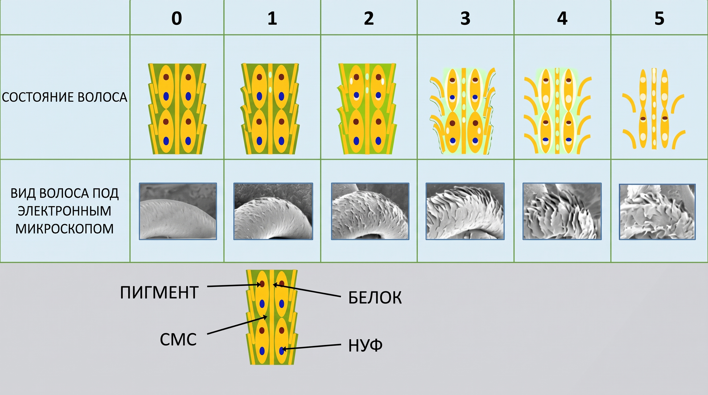
КЕРАТИНОВОЕ ВЫПРЯМЛЕНИЕ ВОЛОС
Выпрямление волос любой сложности, убирает пух и пористость волос, придает волосам красивый блеск и делает их здоровыми на вид.
Эффект от ⏱️ 3–5 месяцев Эффект накопительный.
Для работы требуется утюг с титановым/турмалиновым покрытием.
Окрашивание за 7 дней до процедуры и 7 дней после
Домашний уход — строго профессиональный, содержащий в составе строго мягкие сульфаты.
Существует множество составов для кератинового выпрямления волос. В арсенале необходимо иметь хотя бы 2. Для поврежденных волос и для сильно кудрявых.
БОТОКС ДЛЯ ВОЛОС
Ботокс для волос направлен на питание волос, увлажнение волос в структуре, заполнение пустот клеток.
Эффект держится от ⏱️ 1–3 месяцев в зависимости от техники процедуры.
Для работы требуется утюг с титановым/турмалиновым покрытием.
Окрашивание за 7 дней до процедуры и 7 дней после.
Домашний уход — строго профессиональный, содержащий в составе строго мягкие сульфаты.
БОТОКС В ТЁПЛОЙ ТЕХНИКЕ
НАНОПЛАСТИКА ВОЛОС
Сразу скажу, что этой информации вы не найдете нигде. Больше о нанопластике вы слышали, что это аналог кератинового выпрямления, только с более безопасным, а зачастую и полностью натуральным составом. Главное действующее вещество — аминокислоты, которые встраиваются в структуру волоса и заполняют ее. Масла, экстракты, пантенол и протеин дарят волосам еще больше восстановления и питания.
А теперь забудьте то, что вы только что прочитали.
Итак, нанопластика — это процедура в основе которой кислота. Кислота, когда заходит в волос, она буквально все перемалывает внутри и склеивает в однородную массу. НАНОПЛАСТИКА прекрасно подойдет на жесткие кудрявые сложные волосы! Важно помнить, что дважды подряд НАНОПЛАСТИКУ делать не рекомендую. Лично я делаю ее крайне редко, но это огромное спасение для очень сложных волос, тем самым вы создадите прекрасный фундамент на будущее.
КОМПЛЕКСНАЯ РЕКОНСТРУКЦИЯ
КОМПЛЕКСНАЯ РЕКОНСТРУКЦИЯ — самая востребованная процедура среди моих блондинок! Тот кто пробовал один раз, больше не делают кератин/ботокс в чистом виде...
итак, мы все понимаем, что поврежденные волосы нельзя восстановить, но их можно склеить, поэтому комплексная реконструкция идеальный вариант для тех, кто хочет сделать горячую процедуру на сухие поврежденные волосы (по типу блонда)
- На влажные отжатые полотенцем волосы наносим обильно кислую подложку от IQ HAIR (nano 3D). эмульгируем состав, пока он выдерживается ⏱️ 20 минут
- Затем смываем на 100%
- Далее по такому же принципу наносим аминокислотную подложку (беру или 2 этап от RP или DR.THERAPY SOS. На ⏱️ 20 минут, можно под термошапку
- Смываем и наносим обильно протеиновую подложку от IQ HAIR выдерживаем ⏱️ 15 минут
- смываем на 100%
- Далее сушим на 90-100%
- Наносим кератин или ботокс и выполняем в классической технике
- Даем волосам остыть ⏱️ 15 минут! Не меньше!
- Смываем, сушим и укладываем
Ваши клиенты будут в восторге
ИННОВАЦИОННАЯ РЕКОНСТРУКЦИЯ
Эту информацию тоже говорят далеко не все. Но я обязана поделиться этим с вами.
ИННОВАЦИОННАЯ РЕКОНСТРУКЦИЯ — это та самая реконструкция о которой должен знать и использовать любой уважающий себя мастер.
1. Надеюсь вы в курсе, что модификацию волоса по всей длине можно проводить не более 3 раз, поэтому логично будет выполнять нужную технику выпрямления на отросшей корневой части, а остальное полотно должно быть менее модифицировано.
Итак, делаем кератин только на отросшую часть, а на остальное полотно выбираем: ботокс/холодную реконструкцию/холодный ботокс
тут еще добавлю свой маленький лайфхак: когда вы сделали любую процедуру, смыли и видите сухие концы, то я делаю следующее — наношу на концы мягкий кератин HH OLEO’M (можете взять любой, я работаю только с этим в данной ситуации) сушим, проходим по широким прядкам на 🔥 160–190°C в зависимости от состояния и типа волос
ХОЛОДНОЕ ВОССТАНОВЛЕНИЕ
Холодное восстановление волос — это комплекс процедур, которые направлены на то, чтобы восполнить в поврежденных волосках количество кератина, а также, чтобы восстановить водно-липидный баланс.
Специально разработанные средства с ботоксом позволяют регенерировать волосы на молекулярном уровне — волоски наполнятся кератином, что возвратит им здоровую эластичность, а также силу.
Если волосы были повреждены постоянными экспериментами с использованием агрессивных химических составов — холодное восстановление поможет вернуть им жизнь.
Естественно, у данного типа восстановления нет волшебного вау-эффекта, который было бы тяжело объяснить. Помимо наполнения кератином, процедура отличается следующими преимуществами:
- Уплотнение волос без их утяжеления.
- Волосы становятся послушными, что облегчает укладку.
- Можно забыть о «пушистости» во все стороны, у шевелюры будет красивая эластичность и гладкость.
- Можно не бояться использовать фен или утюжок, так как благодаря холодному восстановлению можно добиться эффекта термозащиты.
- Если вы кудрявая — ваши кудряшки станут лучше и текстурнее.
- Кроме того, крашеным волосам нечего бояться — пигмент не вымывается так быстро, как без кератина, а если вы покрашены в блонд, можете дополнительно избавиться от желтизны.
ХОЛОДНОЕ ВОССТАНОВЛЕНИЕ
- моем голову ШГО
- сушим на 60%
- наносим любой концентрированный ботокс обильно (я использую массажную расческу — наношу сначала на расческу и распределяю по волосам)
- выдерживаем ⏱️ 25–30 минут
- сушим феном на 100%
- проходим по широким прядкам на 🔥 160–190°C в зависимости от состояния волос
- смываем через ⏱️ 24 часа
Приведу пример моих любимых составов:
Наносим 1 обильно на влажные волосы, отжатые полотенцем на ⏱️ 20 минут, далее не смываем и поверх наносим 2 этап тоже на ⏱️ 20 минут. Смываем. Я наношу еще или липидную подложку от IQ HAIR, или крем кератин от NOVEX, или жидкий ботокс от YKAS. Сушим на браш или сушим и потом проходим по толстым прядкам на 🔥 160–180°C.
ХОЛОДНАЯ РЕКОНСТРУКЦИЯ
Холодная реконструкция по моей технике выполняется при помощи подложек.
✨ курс 3–5 раз
СОВМЕЩЕНИЕ С ОКРАШИВАНИЕМ
Перед тем как приступить к главному вопросу, стоит разобраться, что происходит со структурой волос в момент окрашивания. Основной состав краски — это перекись водорода и щелочные элементы. Первый компонент окисляет и проявляет пигмент. Второй помогает красящему пигменту попасть в волосяные чешуйки.
Есть несколько вариантов того, как поступить с волосами, готовясь к кератиновому выпрямлению или ботоксу:
- Первый вариант — это окрашивание волос после проведения процедуры. Конечно, в таком случае есть много нюансов, которые необходимо учесть. Приступать к окрашиванию можно не раньше, чем через ⏱️ 7 дней для брюнеток и ⏱️ 14 дней для блондинок.
- Второй вариант — это окрашивание волос перед процедурой. Этот вариант считается более благоприятным. С помощью сеанса выпрямления цвет запечатается внутри волоска и сохранит эффект надолго, также он будет насыщенным.
НО нужно учесть тот факт, что горячие процедуры имеют свойство «съедать» цвет на 1,5–2 тона.
Исходя из своего личного опыта рекомендую блондинкам сначала сделать окрашивание, а затем кератин/ботокс, а брюнеткам, наоборот.
Также для поддержания холодного блонда рекомендую использовать составы с синим пигментом.
ПОДЛОЖКИ ДЛЯ ВОЛОС
Подложки используют для укрепления поврежденных волос перед кератиновым выпрямлением или ботоксом. Они отлично подходят для работы с поврежденными волосами. Это некая подушка безопасности при процедуре с термовоздействием. Используя подложку, вы вносите какое-то количество питательных веществ в волосы, тем самым мы протезировали кортекс, сверху вы все это запаиваете кератином или ботоксом, таким образом волос получает двойную дозу питательных веществ.
Теоретически, если нанести подложку, а затем нанести кератин или ботокс — могут возникнуть сомнения, выпрямит ли кератин волос, когда ему поставили преграду? Сработает ли ботокс как нужно?
Именно поэтому рекомендуется выбирать подложки с мизерным количеством силиконов, а искать в составах аминокислоты, протеины.
ПОДЛОЖКИ ДЛЯ ВОЛОС
1. Кислая подложка, склеивая волос изнутри, вбирает в себя всю влагу и тем самым волос становится обезвоженный, отсюда следует, что необходимо восполнить влагу при помощи аминокислотной подложки.
2. Затем уже наносим протеиновую подложку для укрепления волоса и создания безопасного фундамента.
3. И последним этапом идёт липидная подложка, которая прекрасно имитирует наш природный гидро-липидный слой.
Также хочу подметить, что если волос не сильно поврежден, а только лишь ослаблен, то можно воспользоваться только протеиновой подложкой.
ПРОТЕКТОР ДЛЯ ВОЛОС
Протектор — это средство защиты от высоких температур, благодаря специальному защитному полимеру. К протекторам относятся все средства для защиты волос от внешнего воздействия и уходовые, направленные на защиту от повреждений.
Бальзамы, маски, сыворотки — действием которых является глубокое восстановление + обволакивание волоса с целью недопущения потери влаги и питательных веществ.
Те, которые применяются в определенные моменты. К ним относится вся качественная, профессиональная защита (включая масла) от перегрева при использовании горячей укладки феном, щипцами, утюгами и сушки волос, а также средства, защищающие от негативного солнечного воздействия.
В эти моменты волосы испытывают нагрузки, что напрямую влияет на их состояние: сухость, сплющивание, жжение.
Для предотвращения этих процессов на волосы наносится специальный состав, который не дает волосу нарушить водный баланс. Утюг, проходя по волосам, приглаживает чешуйки, делая укладку блестящей и абсолютно прямой. Без протектора температура воздействует на корковый слой, как следствие волос становится тонкий, хрупкий, сухой.
При нанесении защиты она выступает амортизатором, окутывая весь волос по периметру и испаряясь частично.
Хороший протектор несмываемый, то есть жидкая фракция испаряется, а полезные и скрепляющие вещества остаются.
ОСНОВЫ ТРИХОЛОГИИ
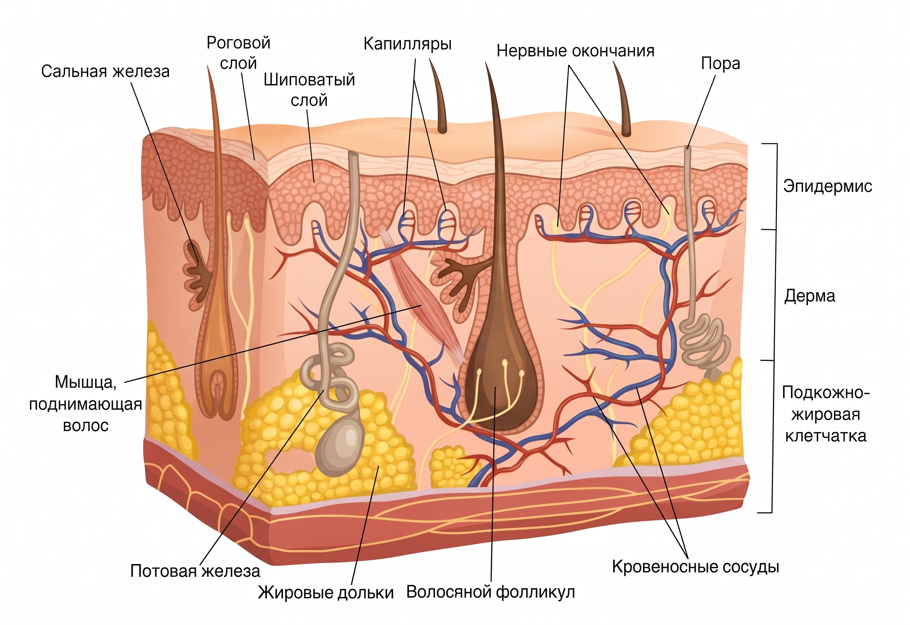
Не имеет кровеносных сосудов. Это многослойный ороговевший верхний слой кожи.
В ней содержатся кровеносные сосуды, эластин, коллаген, корни волос, потовые и сальные железы.
Содержит крупную кровеносную сеть, отвечает за терморегуляцию.
ОСНОВЫ ТРИХОЛОГИИ
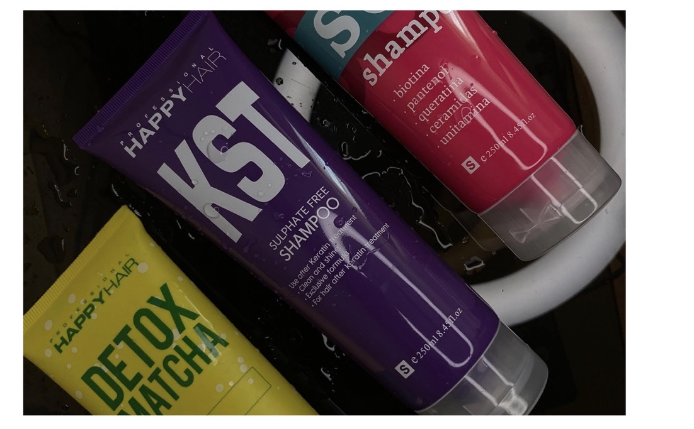
- Жирный
- Нормальный
- Сухой
ОСНОВЫ ТРИХОЛОГИИ
Существует множество причин, которые влияют на нарушения роста волос, их выпадение (алопецию), а также способствуют появлению дефектов структуры, снижения силы, эластичности и блеска волос.
Как правило, это совокупность многих факторов: нарушения питания, наследственные факторы, гормональный дисбаланс, агрессивные внешние воздействия и другие.
Выявить конкретную причину можно только при помощи качественной диагностики!
Одной из самых эффективных процедур по выявлению патологических процессов является трихоскопическое исследование.
Трихоскопия — метод исследования волос и кожи головы при помощи специального прибора трихоскопа.
- шелушения кожи головы
- зуд и раздражения
- выпадение и медленный рост волос
- эффект «жирных корней»
Прибор оборудован видеокамерой с увеличивающей оптикой и соединён с телефоном, что позволяет проводить осмотр проблемного участка кожи головы и волос на глазах у клиента.
Процедура завершается пилингом кожи головы.
ОСНОВЫ ТРИХОЛОГИИ
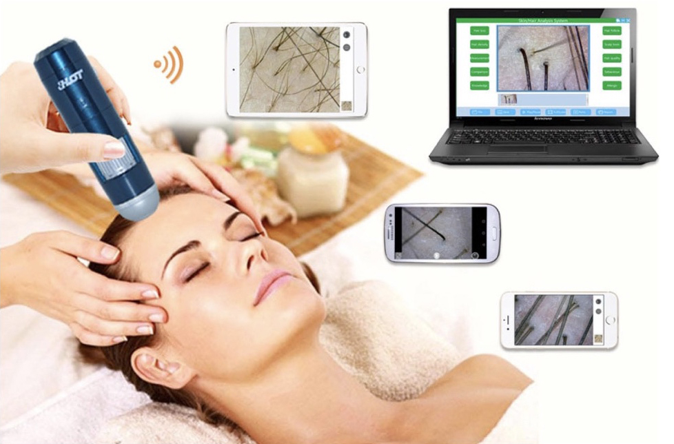
- + возможность получить заключение о состоянии кожи волосистой части головы
- + возможность исследовать состояние на всем его протяжении
- + установить тип кожи головы
- + увидеть, есть ли отличие в диаметре волос + диагностировать заболевания кожи головы
- + исследовать состояния всей системы роста волос
- + исследовать себорегуляторный процесс
ОСНОВЫ ТРИХОЛОГИИ
Еле заметное шелушение является НОРМОЙ. Кожа головы обновляется.
Примерно 28 дней молодые клетки делятся и размножаются, поднимаясь к поверхности эпидермиса.
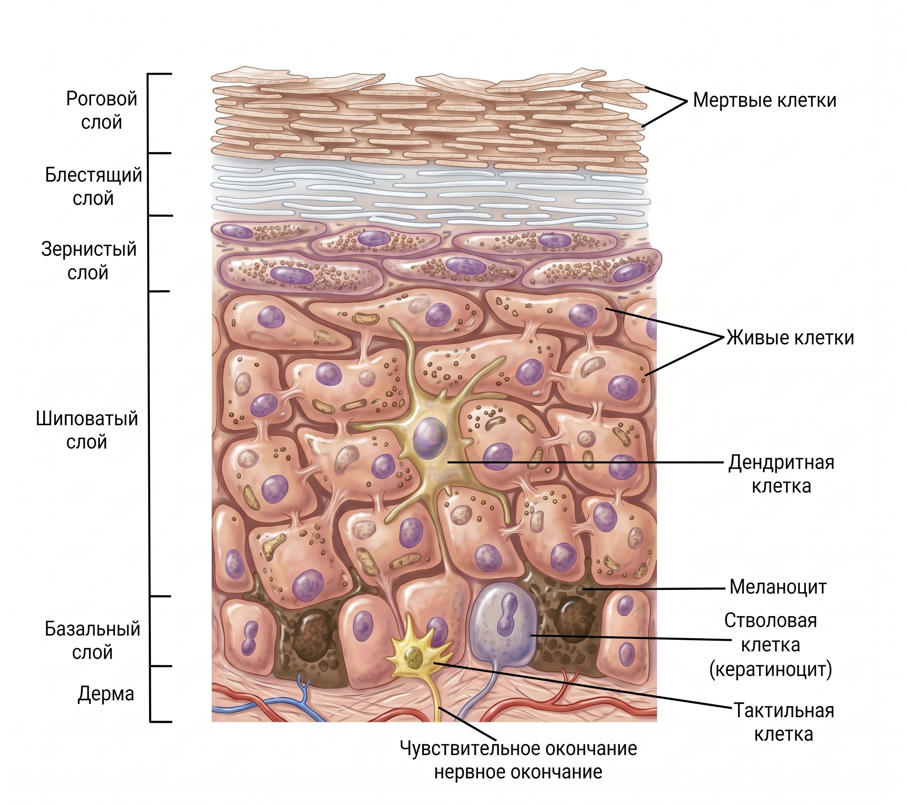
Пока в них есть ядра — они живые. А ближе к поверхности эти клетки теряют ядра — теперь они «мертвые» или ороговевшие.
Именно эти слои нам дают механическую защиту от внешних факторов. На поверхности кожи головы они остаются на какое-то время, а после отшелушиваются.
ОСНОВЫ ТРИХОЛОГИИ
Шелушение означает ПЕРХОТЬ / СЕБОРЕЮ, если замечается «снег на плечах», когда при лёгком почесывании сыпятся чешуйки. Зачастую это сопровождается зудом, а голову приходиться мыть чаще из-за обильной жирности и специфического запаха.
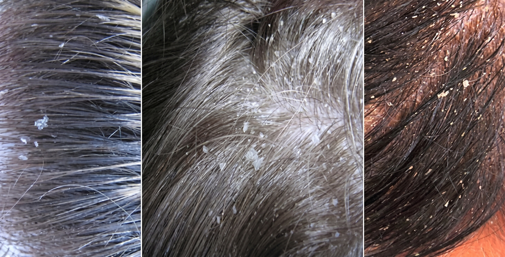
Плохой сон / стресс / неправильное питание / неподходящий шампунь / гормональный сбой / пубертатный период / сопутствующие заболевания, недостаток микроэлементов организму / пересушивание кожи / заболевания ЖКТ и пр.
КАК ПОЯВЛЯЕТСЯ ПЕРХОТЬ?
Жизненный цикл клеток обычно 28 дней.
А при развитии перхоти — 7-20 дней.
То есть отшелушивание происходит гораздо быстрее. С чешуйками кожа пытается ИЗБАВИТЬСЯ от раздражителя.
В случае с перхотью РАЗДРАЖИТЕЛЬ — ЭТО олеиновая кислота, которую выделяют микроорганизмы.
Естественным путём кожа обновиться не успевает. Потому чешуйки смешиваются с салом, налипают друг на друга и создают хлопья перхоти.
ЧТО ТАКОЕ СЕБОРЕЯ?
Мелкие чешуйки белого цвета.
Салоотделение снижено, возможно чувство стянутости кожи головы.
Зуд
Салоотделение увеличивается (сальные железы работают активно).
Потому чешуйки имеют желтоватый оттенок. Волосы быстро становятся грязными, сальными, а чешуйки легко отделяются при поскабливании.
А СЕБОРЕЙНЫЙ ДЕРМАТИТ?
На коже можно увидеть УПЛОТНЕНИЕ — корочка, которая перекрывает проход ко входу в корень волоса.
В этом случае рост волос замедляется и они выпадают.
- Могут быть покраснения, как локальные, так и по всей голове
- Вся ситуация может быть осложнена гнойничками / или внутренними воспалениями (фолликулит)
- Зуд, стянутость кожи
ОСНОВЫ ТРИХОЛОГИИ
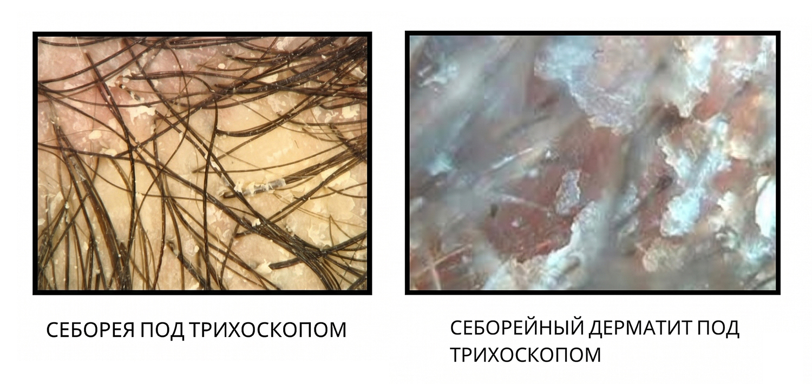
Скопление чешуек кожного сала в устьях фолликулов без выраженного сплошного воспалительного уплотнения.
Плотная корка, перекрывающая волосяные устья, выраженная гиперемия и воспаление скальпа.
ЛЕЧЕНИЕ
— при жирной себорее Happy Hair KST
— при сухой себорее — HH SOS + использование противозудных и противогрибковых мазей/лосьонов
ОСНОВЫ ТРИХОЛОГИИ
- КАЖДЫЙ ВОЛОС РАСТЁТ ПО ИНДИВИДУАЛЬНОМУ ГРАФИКУ
- ВОЛОС В СРЕДНЕМ ОТРАСТАЕТ НА 1 СМ В МЕСЯЦ
- ОДНА ФОЛЛИКУЛА МОЖЕТ ВОСПРОИЗВОДИТЬ ВОЛОС ДО 20–27 РАЗ
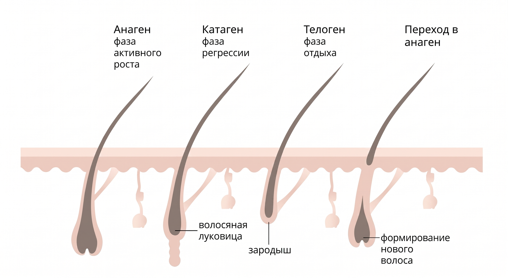
Период активного деления клеток и постоянного роста стержня волоса.
Переходный период прекращения роста и отсоединения фолликула.
Период покоя фолликула с последующим естественным выпадением волоса и зарождением нового.
ВЫПАДЕНИЕ ВОЛОС
- БРОВИ / РЕСНИЦЫ / ВОЛОСЫ ВЫПАДАЮТ И ВНОВЬ РАСТУТ. МЕНЯЮТСЯ.
- НО БРОВЕЙ И РЕСНИЦ МЕНЬШЕ — ВЫ КОНЕЧНО ЭТО НЕ ЗАМЕЧАЕТЕ.
- А ВЫПАДЕНИЕ ВОЛОС ОЧЕНЬ ДАЖЕ ЗАМЕТНО.
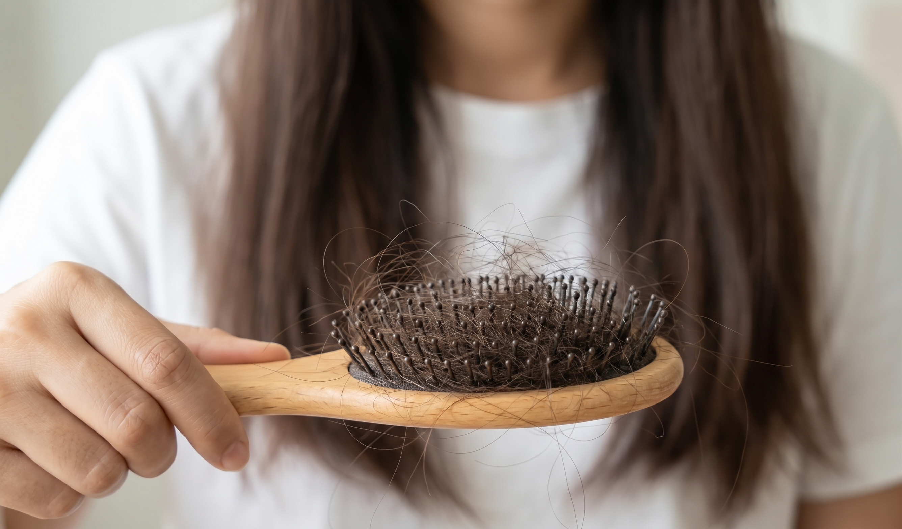
ТЕЛОГЕНОВОЕ ВЫПАДЕНИЕ ДЛИТСЯ ⏱️ 3–4 МЕСЯЦА.
ПРИЧЕМ САМО ВЫПАДЕНИЕ ВЫ ЗАМЕЧАЕТЕ ТОЛЬКО НА 3 МЕСЯЦЕ.
В ПЕРИОД ТВ МОЖЕТ ВЫПАДАТЬ БОЛЕЕ 20% ВОЛОС (БОЛЬШЕ 100 ВОЛОС В ДЕНЬ) — ТВ НАЗЫВАЮТ ЕЩЁ «ДИФФУЗНЫМ ВЫПАДЕНИЕМ». ЭТО ЗНАЧИТ, ЧТО ВОЛОСЫ ВЫПАДАЮТ ПО ВСЕЙ ПОВЕРХНОСТИ, А НЕ ЛОКАЛЬНО.
ВЫПАДЕНИЕ ВОЛОС
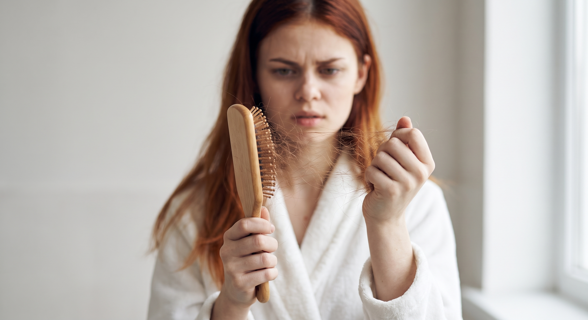
- СТРЕССОВЫЕ ЭМОЦИОНАЛЬНЫЕ СОСТОЯНИЯ, ПЛОХОЙ СОН / ПИТАНИЕ
- НЕХВАТКА МИКРОЭЛЕМЕНТОВ (Н-Р НЕДОСТАТОК ЖЕЛЕЗА)
- БОЛЕЗНИ С ВЫСОКОЙ ТЕМПЕРАТУРОЙ. COVID / ГРИПП И ПР. (ВОССТАНОВЛЕНИЕ ПОСЛЕ КОВИДА ТЯЖЕЛЕЕ И ДОЛЬШЕ)
- ХИРУРГИЧЕСКИЕ ВМЕШАТЕЛЬСТВА (ОПЕРАЦИИ) ИЛИ РОДЫ
- СОПУТСТВУЮЩИЕ БОЛЕЗНИ (ЩИТОВИДНАЯ ЖЕЛЕЗА / ЖКТ / САХАРНЫЙ ДИАБЕТ / АНЕМИЯ / ИНФЕКЦИОННЫЕ ЗАБОЛЕВАНИЯ И ПР.)
ОСНОВЫ ТРИХОЛОГИИ
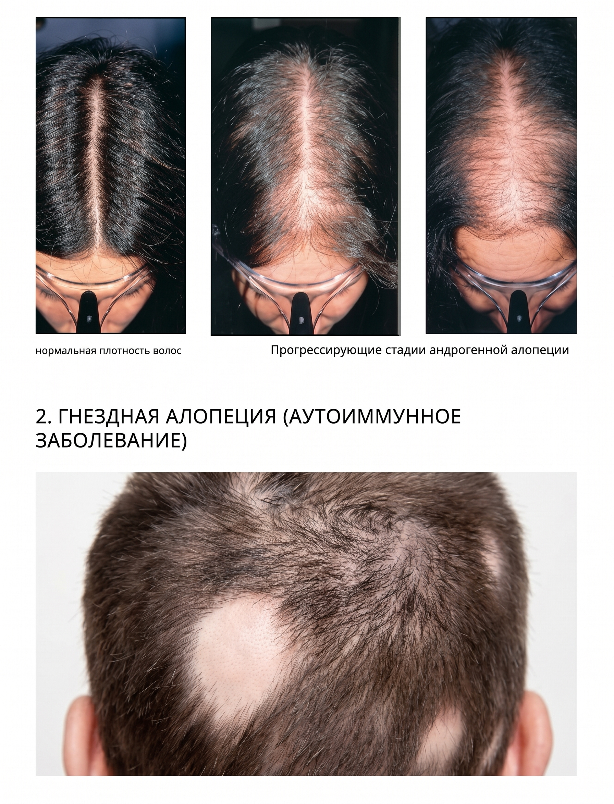
• Зона поредения волос
• Прогрессирующие стадии андрогенной алопеции
• Очаговые поражения волосистой части головы
ПИЛИНГ КОЖИ ГОЛОВЫ
Пилинг для кожи головы — это косметическое средство для удаления ороговевшего слоя эпидермиса.
Пилинг позволяет провести процедуру глубокого очищения: одновременно с частичками кожи он удаляет излишки себума, пыли и пота, все загрязнения и остатки средств для укладки.
- Особенно актуален пилинг кожи головы при использовании лечебных ампул, лосьонов для эффективности этих средств.
-
При возникновении перхоти. Интенсивный уход — пилинг мгновенно отделяет слои перхоти от кожи головы, предотвращает повторное появление себореи, ухаживает за кожей, обладает антисептическим и противогрибковым действием.
Перхоть — очень деликатная, но разрешимая проблема. Она часто возникает в случае дисбаланса кожи, вызванного стрессом, нарушением сна, питания и т.д.
- При жирной коже головы. Пилинг эффективно очищает кожу от ороговевших чешуек, нормализует микрофлору. Кожа головы начинает дышать, что благотворно сказывается на росте здоровых волос.
ПИЛИНГ КОЖИ ГОЛОВЫ
При этом проводится традиционное скрабирование. Используются вещества, которые имеют в составе твердые частицы и способствуют оздоровлению кожи на голове.
Данная процедура подразумевает бережное растворение слоя дермы на поверхности головы с применением специальных кислот. Этот вид пилинга наносится на голову как маска и держится на коже и волосах несколько минут. Процедура направлена на сокращение жирности и уничтожение паразитирующих микроорганизмов.
Эта процедура совмещает газовое (кислород + углекислый газ) воздействие и применение лекарственных препаратов. В результате эпидермис насыщается питательными веществами. Эпидермис головы очищается. Этот вид пилинга доступен только в медицинских учреждениях.
ПИЛИНГ КОЖИ ГОЛОВЫ
Чем более жирная у вас кожа, тем чаще ей требуется очищение.
• Для жирной кожи: используйте пилинг ⏱️ 1 раз в 1,5–2 недели.
• Для сухой и чувствительной кожи: ⏱️ 2 раза в месяц (при явных проблемах).
• Для профилактики: ⏱️ 1 раз в месяц для жирной кожи и по мере необходимости — для сухой.
Нанесите средство на влажную кожу головы и аккуратно помассируйте в течение ⏱️ 2 минут. После этого тщательно смойте шампунем. Время экспозиции ⏱️ 10–15 минут.
- инфекционные заболевания (герпес)
- заболевания кожи в стадии обострения
- наличие травм и ран на коже
- индивидуальная непереносимость компонентов пилинга
- сухая себорея
- себорейный дерматит
ПИЛИНГ КОЖИ ГОЛОВЫ
При работе с пилингом Happy Hair Scalp лучше работать с грязной кожей. Использование ШГО или Happy Hair Detox Matcha перед процедурой не требуется, так как продукт является концентрированным и высоким по силе воздействия. Если есть обильные шелушения, то следует промыть кожу головы обычным шампунем несколько раз.
ПИЛИНГ КОЖИ ГОЛОВЫ
- Предварительно промыть кожу головы шампунем Happy Hair Detox. Благодаря ему мягкие пилинги работают еще лучше
- Нанести продукт, с помощью кисти, на кожу головы по проборам.
- В течении ⏱️ 3-х минут, массирующими движениями пройтись по коже головы.
- Выдержать продукт ⏱️ 5 минут.
- Тщательно смыть пилинг водой.
- Промыть кожу головы обычным шампунем
ДОМАШНИЙ УХОД
Уход после кератина является одним из главных составляющих данной процедуры. Именно от него напрямую зависит длительность эффекта и состояние волос.
- использование бьюти-средств без сульфатов и хлорид натрия, которые способны разрушить кератиновый слой. Безсульфатный шампунь обеспечит бережный уход. Но необходимо учитывать тип кожи головы и подбирать уход, исходя уже из этого.
- не применять масляные и солевые маски для волос;
- избегать агрессивного воздействия внешних факторов на волосы;
- перед выходом на улицу применять защитные спреи для волос;
- избегать солёной воды, хлорированной;
- чрезмерное посещение бань и саун сократит срок носки;
- частые окрашивания также являются врагами кератина;
- и кислоты (никотиновая кислота) неблагоприятно влияют на результат;
- обязательно сушить волосы феном;
- поддерживать результат регулярно масками, салонными SPA уходами.